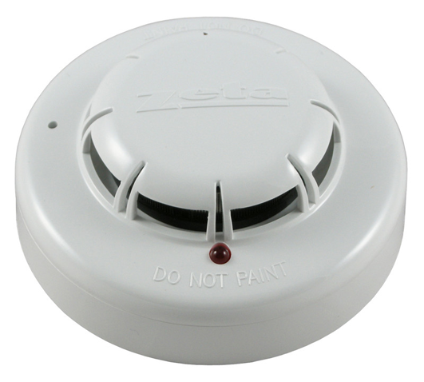

Se llama protección contra incendios el conjunto de medidas de que se dispone en los edificios para protegerlos contra la acción del fuego.
Generalmente, con estas medidas se trata de conseguir tres finalidades:
-
Salvar vidas humanas.
-
Minimizar las pérdidas económicas producidas por el fuego.
-
Conseguir que las actividades del edificio puedan reanudarse en el plazo de tiempo más corto posible.
Hay diferentes sistemas de protección en caso de incendio, como son: protección estructural, detección y alarmas.
Protecció estructural
La protección estructural es la destinada a evitar la propagación del fuego.
La propagación de incendios se evita mediante la aplicación de materiales ignífugos y estructuras resistentes al fuego.
La ignífugo es el tratamiento a que se someten ciertos materiales a fin de reducir su inflamabilidad.
La resistencia al fuego de un elemento constructivo queda fijada por el tiempo durante el cual el elemento es capaz de mantener las condiciones de estabilidad mecánica, aislamiento térmico, estanqueidad a las llamas y ausencia de emisión de los gases inflamables, salvo en el caso de puertas, para las que se excluye la condición de aislamiento térmico. Los elementos constructivos se califican mediante la expresión de su condición de resistentes al fuego (RF) como también del tiempo en minutos durante el cual mantienen sus condiciones.
Detecció i alarma
La primera fase, o primer objetivo en la protección de incendios es la detección de los mismos.
Se entiende por detección el descubrimiento de la existencia de un incendio, inmediatamente después de que se haya iniciado.
El sistema de detección del fuego puede ser:
-
Humano con botones de alarma.
-
Automático.
-
Mezclado.
La elección vendrá determinada por: las pérdidas materiales o humanas en fuego, la posibilidad de vigilancia constante y total por personas, la rapidez requerida, su coste económico ...
-
detección humana
-
Durante el día: Si hay suficiente número de personas la detección está asegurada en las áreas visibles, no así en las zonas que queden ocultas.
-
Durante la noche: Servicio de vigilancia con rondas estratégicas. La rapidez de detección puede ser baja incluso igual al tiempo entre rondas.
-
-
detección automática. Las instalaciones fijas permiten: la detección y localización automática del incendio y la puesta en marcha automática de la alarma. La rapidez de detección es superior, si bien hay detecciones erróneas. Además, puede vigilar zonas inaccesibles a la detección humana. la central de recepción de las señales de alarma está supervisada por un vigilante en un puesto de control o se puede programar para actuar automáticamente. Una instalación automática de detección consta de los siguientes componentes:
-
Detectores automáticos.
-
Botones manuales.
-
Central de señalización.
-
Alarma general.
-
Teléfono directo a los bomberos.
-
Sistemas de extinción.
-
- 
- Detector óptico de humos
En las figuras adyacentes encontramos diferentes detectores automáticos de humos.
Los detectores son: Aparatos de instalación fija que registran, comparan y miden automáticamente fenómenos y / o variaciones ambientales provocadas por la aparición de un incendio, como son la temperatura o las radiaciones ultravioleta.
- Detector térmico de humos
Según el fenómeno que detectan, se les denomina de la siguiente manera: detector de gases de combustión iónico, detector óptico de humos, detector óptico de llamas, detector térmico.